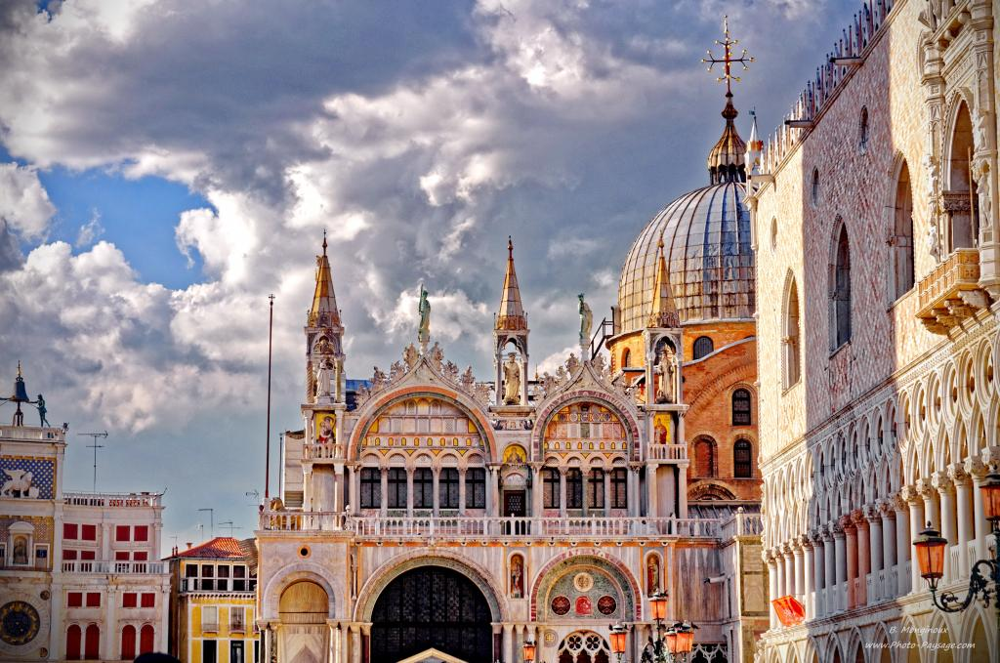
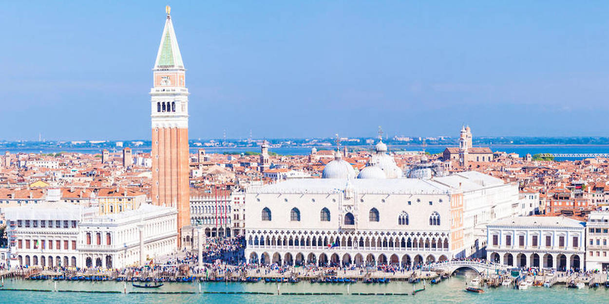
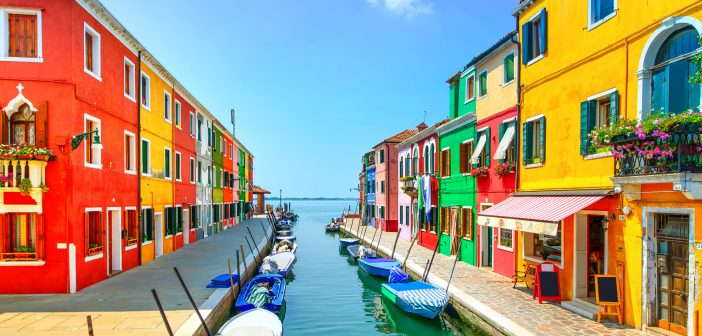

La construction de l’imposante Basilique Saint-Marc date de la moitié du 11ème siècle, elle est très fleurie et on la reconnaît avec sa façade portant un lion d’or muni d’ailes, le symbole de Venise. Cette basilique est à découvrir à tout prix pour ses mosaïques, ses dômes, ses statues et l’autel qui contiendrait les ossements de Saint Marc en personne.
c’est une cité à la fois magique, irréelle et contemporaine, une ville sur l’eau. Plus qu’une simple carte postale, Venise se laisse découvrir avec tous les sens. Voyons ensemble les principaux spots et les visites incontournables de Venise qui ne laissent personne de marbre, loin de là.
BASILIQUE DE SAINT MARC

PALAIS DE DOGES
Avec son architecture gothique, il fut la résidence des Doges qui dirigeaient la République. C’est un palais riche en histoire et qui propose des œuvres picturales sensationnelles comme celles de Véronèse, de Bellini, du Titien ou du Tintoret. Certainement l’un des plus beaux palais d’Europe auquel vous aurez accès via le tristement célèbre Pont des Soupirs.

ILES DE LA LANGUNE
Venise ce n’est pas seulement le cœur de la cité mais c’est aussi la magnificence de ses petites îles : L’île de Murano est sûrement la plus connue pour son art de la verrerie, reconnu internationalement ainsi que son musée du verre. L’île de Burano est tout à fait singulière et très appréciée par les touristes pour la diversité des couleurs des maisons et pour ses décors qui sortent tout droit de cartes postales. Burano est connue pour son industrie de la dentelle. Enfin, la troisième île est l’île de Torcello : c’est la plus grande des 3 îles de la lagune et elle accueille la plus ancienne église. Mais c’est aussi une sorte de ville fantôme qui n’attire que peu de touristes.

LES PONTS DE VENISE
La cité en compte près de 540 ponts dont les accès sont entièrement gratuits. Le pont des Soupirs est à voir évidemment car il était la jonction entre le palais des Doges et la prison où Casanova et bien d’autres hommes furent emprisonnés. Il y a le pont du Rialto dont la construction remonte à 1500 et qui fut la première édification à traverser le Grand Canal. C’est un pont très coloré offrant 3 passages piétonniers avec un passage central pour se promener et les deux autres rangées pour les boutiques installées sous les arches.